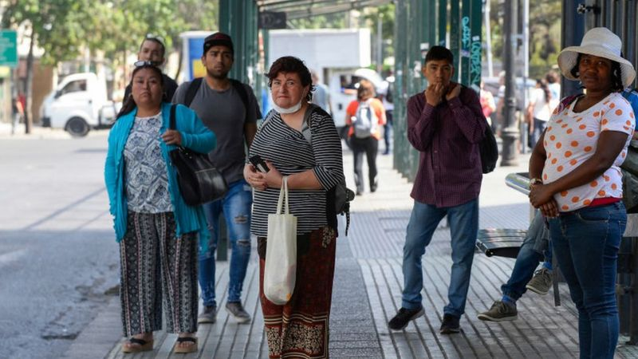

"No califico para el bono": las duras críticas al sistema de ayudas sociales en Chile para hacer frente a los efectos de la pandemia
Miles de chilenos han sido descalificados para recibir el Bono Clase Media que pretende ayudar a las familias que han sufrido una reducción de sus ingresos producto de la crisis por la pandemia.
"Yo no califico para nada. Soy invisible; es muy fuerte".
Paz Ruiz, de 75 años, ha intentado recibir alguna de las ayudas sociales proporcionadas por el gobierno de Chile para hacer frente a la crisis económica provocada por la covid-19. Sin embargo, no ha tenido suerte.
La última vez intentó recibir el "Bono Clase Media" para pensionados, que busca beneficiar a familias que han sufrido la reducción de sus ingresos producto de la pandemia.
Pero, una vez más, no cuenta con los requisitos solicitados.
"Mis únicos ingresos son el montepío de mi marido, 260.000 pesos, y una jubilación de Naciones Unidas (donde era secretaria) de unos US$60 mensuales. Entonces yo nunca puedo pedir un préstamo o postular a nada porque no tengo cómo respaldar esta cantidad de plata; es muy poquita. No califico para nada", dice.